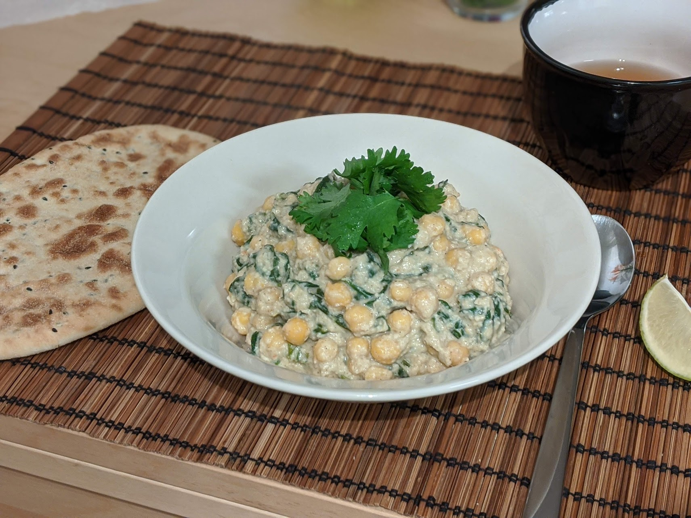

Curry de pois chiches aux épinards

Pour 4 personnes :
- Une cuillère à café et demi de graines de cumin
- Une cuillère à café et demi de graines de coriandre
- Une étoile de badiane
- Trois clous de girofle
- Une demi-cuillère à café de grains de poivre noir
- Une graine de cardamome
- Une demi-cuillère à café de cannelle
- Une demi-cuillère à café de curcuma
- Une pincée de muscade
- Une pincée de piment en poudre
- Un oignon
- Quatre gousses d'ail
- Un petit piment
- Un pouce de gingembre frais
- Une poignée de noix de cajou
- 400mL de lait de coco
- Un kilo de pois chiches en boîte (égouttés — ça fait 4 boîtes de taille standard)
- 300g d'épinards
- Une demi-botte de coriandre
- Trois citrons verts
- Huile d'olive (ou beurre, ou ghee), sel
- Faire toaster le cumin, la coriandre, l'étoile de badiane, les clous de girofle, les grains de poivre et la graine de cardamome dans une poêle anti-adhésive (sans ajouter de gras) pendant quelques minutes, jusqu'à ce que ça sente super bon.
- Pendant ce temps, laver et équeuter les épinards, laver la coriandre et récupérer les feuilles, presser les citrons verts pour en récupérer le jus (en gardant un demi-citron vert que l'on coupe en quartiers, pour décorer les assiettes).
- Réduire les épices toastées en poudre avec un mortier et un pilon (ou un mixeur à épices), y ajouter les épices en poudre.
- Éplucher et émincer l'oignon. Le faire revenir à feu moyen dans une quantité généreuse d'huile d'olive. Éplucher et écraser l'ail, le rajouter ; laver et émincer le chili, le rajouter, éplucher et couper le gingembre, le rajouter. Laisser cuire le tout en mélangeant jusqu'à ce que ça devienne bien brun, presque brûlé par endroits.
- Ajouter les noix de cajou et la moitié du mélange d'épices. Laisser revenir une ou deux minutes (il faut que ça se remette à sentir bon), puis ajouter le lait de coco et retirer du feu.
- Attendre que ça refroidisse un peu, puis mixer le tout (en récupérant bien les petits morceaux sur les bords de la poêle) jusqu'à ce que ça devienne une crème homogène.
- Mettre le mélange dans une grosse casserole. Faire chauffer à feu moyen-doux, égoutter et rincer les pois chiches, et les ajouter avec les épinards et le reste du mélange d'épices dans la casserole. Faire cuire un petit quart d'heure à feu moyen-doux, en faisant attention à ce que ça n'attache pas.
- Ajouter une bonne moitié du jus de citron et des feuilles de coriandre à la dernière minute, rectifier l'assaisonnement (en jus de citron et en sel).
- Servir chaud, accompagné de riz basmati ou de naans, avec quelques tranches de citron vert et un bol de coriandre pour que les gens puissent en mettre plus suivant les goûts.
Remarque : on peut aussi simplement sauter les deux premières étapes et utiliser du garam masala tout fait (environ 2 cuillères à soupe).
Retour à la liste des recettes